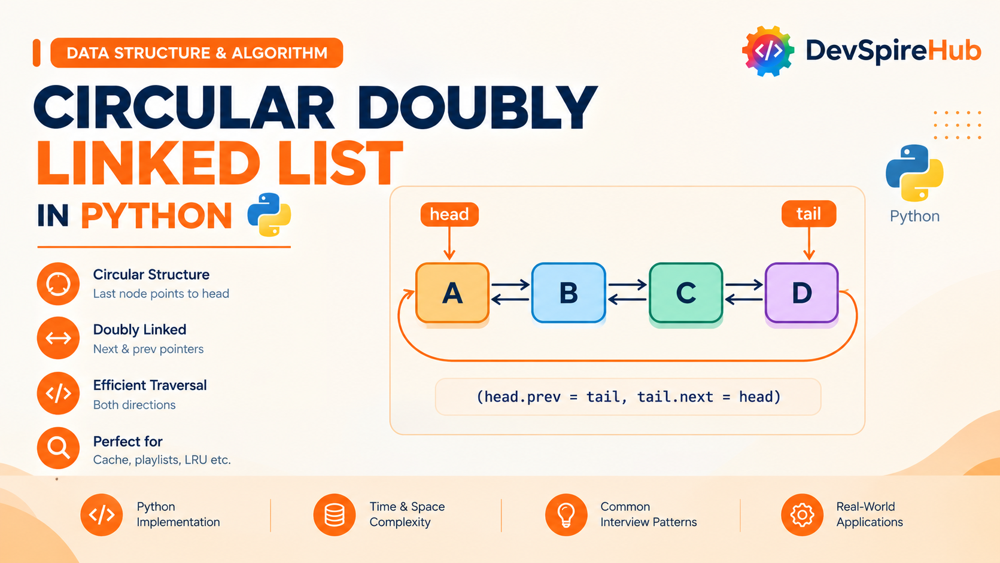
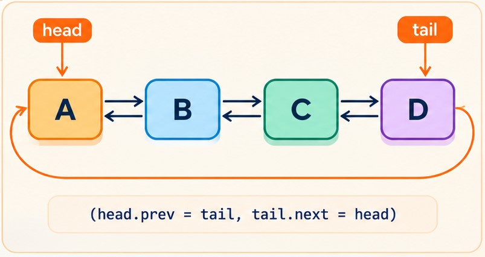

Circular Doubly Linked List in Python Data Structure in Python – Complete Tutorial with Examples
A circular doubly linked list is an advanced linked-list data structure that combines the features of a doubly linked list and a circular linked list. Each node contains a value along with two references: a next pointer to the following node and a prev pointer to the previous node. Unlike a standard linked list, the final node does not point to None; instead, it connects back to the first node, creating a continuous circular structure.

Designed for beginners and developers preparing for technical interviews, this circular doubly linked list tutorial covers:
-
Core Concepts & Structure:
Understand how a circular doubly linked list combines a doubly linked list and a circular linked list. Learn how each node stores a
value,nextpointer, andprevpointer, whiletail.nextpoints toheadandhead.prevpoints totail. -
Implementations:
Build a circular doubly linked list from scratch using a custom
Nodeclass, standalone functions, and a completeCircularDoublyLinkedListclass. Learn how to handle empty, one-node, and multi-node lists while maintaining correct forward and backward links. - Essential Operations: Master forward and backward traversal, insertion at the beginning and end, insertion before or after a node or value, deletion at the beginning and end, deletion by value or node reference, searching, updating, rotating, splitting, breaking circularity, and bidirectional Josephus-style elimination.
-
Time Complexity & Performance:
Understand why insertion and deletion using a node reference take
O(1)time, why deleting at the end is faster than in a circular doubly linked list, and why searching by value still requiresO(n)traversal. - Real-World Applications: Explore how circular doubly linked lists support repeatable music playlists, media carousels, round-robin scheduling, circular deques, undo and redo systems, circular buffers, Josephus-style simulations, bounded history, and bidirectional navigation.
-
Interview Prep & Patterns:
Practice detecting circularity with Floyd’s algorithm, deleting a node in
O(1)usingprevandnext, inserting before a known node, rotating in both directions, splitting a circular doubly linked list, flattening multilevel lists, implementing a deque, and designing O(1) data structures. -
Comparisons with Related Structures:
Compare circular doubly linked lists with doubly linked lists, doubly linked lists, circular doubly linked lists, queues, and deques. Understand how the
prevpointer enables backward traversal and eliminates the need to search for a node’s predecessor.
Table of Contents
Introduction
1. What Is Circular Doubly Linked List?
A Circular Doubly Linked List combines two upgrades you've already learned separately: like a Doubly Linked List, each node has both next and prev pointers; like a Circular doubly Linked List, the last node connects back to the first instead of pointing to None. Put the two together, and you get a structure where every node can be reached going forward OR backward, and the "ends" simply don't exist, tail.next is head, and head.prev is tail.
Real-World Analogy: Think of a Ferris wheel with connected passenger cars. Each car can talk to the car ahead of it AND the car behind it (that's the "doubly" part), and the whole ride loops around continuously with no first or last car, you could ride forward or backward indefinitely (that's the "circular" part).

Direct connections to what you already know:
- From Doubly Linked List: each node contains
value,next, andprev. Having links in both directions allows a node to be removed in O(1)O(1) time when you already have a reference to it. - From Circular doubly Linked List: the list does not use None to mark an endpoint. Traversal continues until it reaches the starting node again, completing one full cycle.
- What the combination adds: the
nextandprevlinks and circular structure make some operations faster. In a Circular doubly Linked List, inserting before a node or locating its predecessor typically takes O(n)O(n) time. In a Circular Doubly Linked List, both operations can take O(1)O(1) time when the relevant node reference is available.
Real systems/software that use circular doubly linked lists internally:
- Python’s
collections.dequeuses a doubly linked block structure. Although it is not simply a circular doubly linked list, its two-ended behavior makes it useful for round-robin workflows and other cyclic processing patterns. - Music players and media carousels can use this design for playlists or content rows that support next, previous, shuffle, and repeat actions.
- Operating-system schedulers may maintain runnable processes in circular linked structures, allowing the scheduler to cycle through tasks without resetting to the beginning of a separate queue.
- Undo and redo systems can store editing states in a linked sequence, making it possible to move backward, move forward, or continue editing from an earlier point.
- The Josephus Problem is naturally represented by a circular list. A doubly linked version is useful when elimination or navigation must also work in reverse.
- LRU caches commonly use a regular doubly linked list, but some cache designs use a circular form to simplify movement between the most-recently and least-recently used entries.
2. Core Operations & Complexity
Before you write a single line of code, it helps to know exactly what a circular doubly linked list can do, and how fast each action really is. In this section, we break down the core linked list operations: insert, delete, search / traversal, and update, along with their time complexities and underlying mechanics.
| Operation | Variant | Time Complexity | Why |
|---|---|---|---|
| Insert at beginning | by value | O(1) | Create + relink head, tail, and their prev/next no walking, no search |
| Insert at beginning | by node | O(1) | Same as above, minus node creation |
| Insert at end | by value | O(1) | Same relinking pattern, using tail directly |
| Insert at end | by node | O(1) | Same as above |
| Insert in middle | after a given node | O(1) | Direct relinking using the node's own next/prev |
| Insert in middle | after a given value | O(n) to find, O(1) to insert | Search cost dominates; insertion itself is instant |
| Insert in middle | before a given node | O(1) | This is the headline improvement over Circular doubly Linked List target_node.prev gives you the predecessor instantly |
| Insert in middle | before a given value | O(n) to find, O(1) to insert | Same search-then-insert split as above |
| Operation | Variant | Time Complexity | Why |
|---|---|---|---|
| Delete at beginning | by value or by node | O(1) | head.next.prev and tail.next relink directly |
| Delete at end | by value or by node | O(1) | tail.prev.next relink directly unlike Circular doubly Linked List, where this was O(n) |
| Delete in middle | by node | O(1) | The node's own prev/next let its neighbors relink to each other directly no predecessor search needed at all |
| Delete in middle | by value | O(n) to find, O(1) to delete | Search cost dominates; the delete itself is instant once found |
| Operation | Variant | Time Complexity | Why |
|---|---|---|---|
| Search by value | forward or backward | O(n) | No shortcuts for searching still must check values one at a time (though you can now search from either end) |
| Search by node | forward or backward | O(n) | Same reasoning, comparing identity instead of value |
| Operation | Variant | Time Complexity | Why |
|---|---|---|---|
| Update by value | find-and-update | O(n) | Search dominates; write is O(1) |
| Update by node | direct reference | O(1) | No searching at all |
3. Core Operations Explained (With Examples)
The following sections explain each circular doubly linked list operation using short, focused code examples. Every snippet demonstrates one task at a time, making it easier to understand how the node connections change.
We'll use this Node class throughout, with next and prev pointers:
Python
class Node:
def __init__(self, value):
self.value = value
self.next = None # forward pointer
self.prev = None # backward pointer -this is what unlocks O(1) everywhere
A display helper can show the loop clearly:
Python
def display(head):
values = traverse(head)
if values:
print(" ⇄ ".join(map(str, values)) + " ⇄ back to head")
else:
print("Empty list")
3.1 Insertion
3.1.1 Insert at Beginning
How it works, step by step:
- Create a new node with the required value.
- Connect the new node to the current head.
- Update the old head's
prevpointer. - Update the tail's
nextpointer. - Move
headto the new node
Before:
┌─────────────────┐
↓ │
[ B ] ⇄ [ C ] ───────┘
(B.prev = C, C.next = B)
After inserting A at head:
┌─────────────────────────┐
↓ │
[ A ] ⇄ [ B ] ⇄ [ C ] ──────┘
Isolated code:
Python - by Value
def insert_at_beginning_by_value(head, tail, value):
new_node = Node(value)
if head is None:
new_node.next = new_node.prev = new_node
return new_node, new_node
new_node.next = head
new_node.prev = tail
head.prev = new_node
tail.next = new_node
return new_node, tail
head = None
tail = None
head, tail = insert_at_beginning_by_value(head, tail, 10)
head, tail = insert_at_beginning_by_value(head, tail, 20)
head, tail = insert_at_beginning_by_value(head, tail, 30)
head, tail = insert_at_beginning_by_value(head, tail, 5)
display(head)
3.1.2 Insertion at Tail
How it works, step by step:
- Create or receive the node that will be added.
- If the list is empty, point the new node’s
nextandprevpointers to itself. - Set the new node as both head and tail.
- If the list is not empty, point the new node’s
next to head. - Point the new node’s
prevto the current tail. - Point the current tail.
nextto the new node. - Point head.
prevto the new node. - Keep
headunchanged. - Update
tailto the new node. - Return the updated
headandtail.
Before (with a tracked tail pointer):
head
↓
[ A ] → [ B ]
↑ │
└─────────┘
↑
tail
After inserting "C":
head
↓
[ A ] → [ B ] → [ C ]
↑ │
└─────────────────┘
↑
tail
Isolated code:
Python - by Value
def insert_at_end_by_value(head, tail, value):
new_node = Node(value)
if head is None:
new_node.next = new_node.prev = new_node
return new_node, new_node
new_node.prev = tail
new_node.next = head
tail.next = new_node
head.prev = new_node
return head, new_node
# Create existing circular doubly linked list
node1 = Node(10)
node2 = Node(20)
node3 = Node(30)
# Create next links
node1.next = node2
node2.next = node3
node3.next = node1
# Create previous links
node1.prev = node3
node2.prev = node1
node3.prev = node2
# Set head and tail
head = node1
tail = node3
# Input value
value = 40
# Insert at the end
head, tail = insert_at_end_by_value(head, tail, value)
# Display the list
display(head)
3.1.3 Insertion at the Middle (AFTER a Given Node/Value)
How it works, step by step:
- Create a new node containing the value to insert.
- If the list is empty, make the new node point to itself through both
nextandprev. - Set the new node's
nextto the currenthead. - Set the new node's
prevto the currenttail. - Update the current
head.prevto point to the new node. - Update
tail.next to point to the new node. - Move
headto the new node. - Keep
tailunchanged because the last node has not changed.
Before (inserting after B):
[ A ] ⇄ [ B ] ⇄ [ D ]
↑ │
└────────────────┘
back to A
After inserting C after B:
[ A ] ⇄ [ B ] ⇄ [ C ] ⇄ [ D ]
↑ │
└─────────────────────────┘
back to A
Isolated code:
Python - by Value
def insert_after_node(target_node, value):
new_node = Node(value)
new_node.next = target_node.next
new_node.prev = target_node
target_node.next.prev = new_node
target_node.next = new_node
def insert_after_value(head, target_value, new_value):
if head is None:
return
current = head
while True:
if current.value == target_value:
insert_after_node(current, new_value)
return
current = current.next
if current is head:
return
# Create nodes
node1 = Node(10)
node2 = Node(20)
node3 = Node(30)
node4 = Node(40)
# Create next links
node1.next = node2
node2.next = node3
node3.next = node4
node4.next = node1
# Create previous links
node1.prev = node4
node2.prev = node1
node3.prev = node2
node4.prev = node3
# Set head
head = node1
# Insert 25 after 20
insert_after_value(head, 20, 25)
# Display
display(head)
3.1.4 Insertion at the Middle (BEFORE a Given Node/Value)
How it works, step by step:
- For the node-based version, receive the target node. For the value-based version, start at
headand search for the target value. - Create a new node containing the supplied value.
- If the target node is the current
head, updateheadto the new node after linking it before the old head. - If the target is not the head, get the target node's previous node using
target_node.prev. - Set the new node's
nextto the target node. - Set the new node's
prevto the target node's previous node. - Update the previous node's
nextto point to the new node. - Update the target node's
prevto point to the new node. - Keep
tailunchanged because the last node is not affected. - For a value-based search, stop after the first matching value is found.
- If the target value is not found, stop when traversal returns to
head.
Before inserting C before D:
[ A ] ⇄ [ B ] ⇄ [ D ]
↑ │
└──────────────────┘
back to A
After inserting C before D
[ A ] ⇄ [ B ] ⇄ [ C ] ⇄ [ D ]
↑ │
└───────────────────────────┘
back to A
Isolated code:
Python - by Value
def insert_before_node(target_node, value):
new_node = Node(value)
new_node.next = target_node
new_node.prev = target_node.prev
target_node.prev.next = new_node
target_node.prev = new_node
def insert_before_value(head, target_value, new_value):
if head is None:
return
current = head
while True:
if current.value == target_value:
insert_before_node(current, new_value)
return
current = current.next
if current is head:
return
# Create nodes
node1 = Node(10)
node2 = Node(20)
node3 = Node(30)
node4 = Node(40)
# Create next links
node1.next = node2
node2.next = node3
node3.next = node4
node4.next = node1
# Create previous links
node1.prev = node4
node2.prev = node1
node3.prev = node2
node4.prev = node3
# Set head
head = node1
# Insert 25 before 30
insert_before_value(head, 30, 25)
# Display
display(head)
3.2 Deletion
3.2.1 Delete at Beginning - (by Value/Node)
How it works, step by step:
- Check whether the list is empty.
- If the list is empty, return
None, None. - Check whether
headandtailrefer to the same node. - If there is only one node, remove it by returning
None, None. - For a list with multiple nodes, store
head.nextas the new head. - Update the new head's
prevto point totail. - Update
tail.nextto point to the new head to preserve the circular link. - The old head is no longer part of the list because no active node points to it.
- Return the updated
headand the unchangedtail. - For deletion by node, the head node is already known, so no value search is required.
- For deletion by value, first check whether the head contains the target value. If it does, perform the same beginning-deletion operation.
Before:
[ A ] ⇄ [ B ] ⇄ [ C ] ⇄ (back to A)
After deleting the head:
[ B ] ⇄ [ C ] ⇄ (back to B)
Isolated code:
Python
def delete_at_beginning(head, tail):
if head is None:
return None, None
if head is tail:
return None, None
new_head = head.next
new_head.prev = tail
tail.next = new_head
return new_head, tail
# Create nodes
node1 = Node(10)
node2 = Node(20)
node3 = Node(30)
node4 = Node(40)
# Connect next pointers
node1.next = node2
node2.next = node3
node3.next = node4
node4.next = node1
# Connect prev pointers
node1.prev = node4
node2.prev = node1
node3.prev = node2
node4.prev = node3
# Set head and tail
head = node1
tail = node4
# Display before deletion
print("Before deletion:")
display(head)
# Delete first node
head, tail = delete_at_beginning(head, tail)
# Display after deletion
print("\nAfter deleting at beginning:")
display(head)
3.2.2 Delete at End (by Value/Node)
How it works, step by step:
- Check whether the list is empty.
- If the list is empty, return
None, None. - Check whether
headandtailrefer to the same node. - If there is only one node, remove it by returning
None, None. - For a list with multiple nodes, get the node before the tail using
tail.prev. - Store this node as the new tail.
- Update the new tail's
nextto point tohead. - Update
head.prevto point to the new tail. - The old tail is no longer part of the list because its neighboring links have been updated.
- Return the unchanged
headand the updatedtail. - For deletion by node, the tail node is already known, so no search is required.
- For deletion by value, search for the target value and, if it is the tail, perform the same end-deletion operation.
Before:
[ A ] ⇄ [ B ] ⇄ [ C ] ⇄ (back to A)
After deleting the tail (C):
[ A ] ⇄ [ B ] ⇄ (back to A)
Isolated code:
Python
def delete_at_end(head, tail):
if head is None:
return None, None
if head is tail:
return None, None
new_tail = tail.prev
new_tail.next = head
head.prev = new_tail
return head, new_tail
# Create nodes
node1 = Node(10)
node2 = Node(20)
node3 = Node(30)
node4 = Node(40)
# Connect next pointers
node1.next = node2
node2.next = node3
node3.next = node4
node4.next = node1
# Connect prev pointers
node1.prev = node4
node2.prev = node1
node3.prev = node2
node4.prev = node3
# Set head and tail
head = node1
tail = node4
# Display before deletion
print("Before deletion:")
display(head)
# Delete last node
head, tail = delete_at_end(head, tail)
# Display after deletion
print("\nAfter deleting at end:")
display(head)
3.2.3 Delete in the Middle - (by Value/Node)
How it works, step by step:
- Check whether the list is empty.
- For the node-based function, check whether the target node is the current
headortail. - If the target node is the
head, remove it using the beginning-deletion operation. - If the target node is the
tail, remove it using the end-deletion operation. - For the value-based function, start at
headand search for the target value. - If the target value is found in the
head, remove the first node. - If the target value is found in the
tail, remove the last node. - For a middle node, get its previous node using
target_node.prev. - Get the target node's next node using
target_node.next. - Update the previous node's
nextto point to the target node's next node. - Update the next node's
prevto point to the target node's previous node. - The target node is now disconnected from the circular list.
- Return the unchanged
headandtail. - For a value-based search, stop when the target value is found.
- If the target value is not found, stop when traversal returns to
head.
Before (deleting B):
[ A ] ⇄ [ B ] ⇄ [ C ] ⇄ (back to A)
After:
[ A ] ⇄ [ C ] ⇄ (back to A)
Isolated code:
Python - by node
def delete_node(target_node, head, tail):
if target_node is head and target_node is tail:
return None, None
target_node.prev.next = target_node.next
target_node.next.prev = target_node.prev
new_head = target_node.next if target_node is head else head
new_tail = target_node.prev if target_node is tail else tail
return new_head, new_tail
# Create nodes
node1 = Node(10)
node2 = Node(20)
node3 = Node(30)
node4 = Node(40)
# Connect next pointers
node1.next = node2
node2.next = node3
node3.next = node4
node4.next = node1
# Connect prev pointers
node1.prev = node4
node2.prev = node1
node3.prev = node2
node4.prev = node3
# Set head and tail
head = node1
tail = node4
# Display before deletion
print("Before deletion:")
display(head)
# Delete node 30
target_node = node3
head, tail = delete_node(target_node, head, tail)
# Display after deletion
print("\nAfter deleting node 30:")
display(head)
3.3 Search / Traversal
3.3.1 Search
How it works, step by step:
- Check whether the list is empty.
- If the list is empty, return
False. - Start traversal from
head. - Compare the current node with the search target.
- For value-based search, compare the node value using
==. - For node-based search, compare the exact node using
is. - Return
Truewhen a match is found. - Move to the next node using
current.next. - Continue until the traversal reaches
headagain. - Return
Falseif the target is not found.
Trace for searching "C" in A → B → C → (back to A):
Step 1: current = A → A.value == "C"? No
Step 2: current = B → B.value == "C"? No
Step 3: current = C → C.value == "C"? Yes → FOUND
Isolated code:
Python - by Value
def search_by_value(head, target_value):
# If list is empty
if head is None:
return None
current = head
while True:
if current.value == target_value:
return current
current = current.next
# Completed the loop, value not found
if current is head:
return None
# Create nodes
node1 = Node(10)
node2 = Node(20)
node3 = Node(30)
node4 = Node(40)
# Connect next pointers
node1.next = node2
node2.next = node3
node3.next = node4
node4.next = node1
# Connect prev pointers
node1.prev = node4
node2.prev = node1
node3.prev = node2
node4.prev = node3
# Set head and tail
head = node1
tail = node4
# Display the list
print("Circular Doubly Linked List:")
display(head)
# Search for a value
target_value = 30
result = search_by_value(head, target_value)
if result is not None:
print("\nValue found:", result.value)
else:
print("\nValue not found")
3.4 Update
How it works, step by step:
- For value-based updating, check whether the list is empty.
- Start traversal from
head. - Compare each node's value with
old_value. - When a matching value is found, replace it with
new_value. - For node-based updating, use the supplied node directly.
- Assign
new_valueto the node'svalueattribute. - Move to the next node using
current.nextwhen the value does not match. - Stop the traversal when it reaches
headagain. - Return
Truewhen the update is successful. - Return
Falseif the target value is not found.
Isolated code:
Python - by Value
def update_by_value(head, old_value, new_value):
if head is None:
return None
current = head
while True:
if current.value == old_value:
current.value = new_value
return head
current = current.next
if current is head:
return head
# Create circular doubly linked list
node1 = Node(10)
node2 = Node(20)
node3 = Node(30)
node4 = Node(40)
# Connect next pointers
node1.next = node2
node2.next = node3
node3.next = node4
node4.next = node1
# Connect prev pointers
node1.prev = node4
node2.prev = node1
node3.prev = node2
node4.prev = node3
# Set head and tail
head = node1
tail = node4
# Display before update
print("Before update:")
display(head)
# Input
old_value = 30
new_value = 35
# Update value
head = update_by_value(head, old_value, new_value)
# Display after update
print("\nAfter updating 30 to 35:")
display(head)
4. Implementations
Now that you understand the basic operations of a circular doubly linked list, it’s time to combine them into complete Python implementations. This section begins with a custom Node class and a linked-list class that supports common operations such as adding, deleting, searching, and displaying values.
Method 1 - Complete From-Scratch Class (all variants as methods)
This class collects every method introduced in Section 3 into one working reference implementation:
Python
class Node:
def __init__(self, value):
self.value = value
self.next = None
self.prev = None
class CircularDoublyLinkedList:
def __init__(self):
self.head = None
self.tail = None
self._size = 0
def insert_at_head(self, value):
new_node = Node(value)
if self.head is None:
new_node.next = new_node
new_node.prev = new_node
self.head = self.tail = new_node
else:
new_node.next = self.head
new_node.prev = self.tail
self.head.prev = new_node
self.tail.next = new_node
self.head = new_node
self._size += 1
def insert_at_tail(self, value):
new_node = Node(value)
if self.head is None:
new_node.next = new_node.prev = new_node
self.head = self.tail = new_node
else:
new_node.prev = self.tail
self.tail.next = new_node
new_node.next = self.head
self.head.prev = new_node
self.tail = new_node
self._size += 1
def insert_after_node(self, target_node, value):
new_node = Node(value)
new_node.next = target_node.next
new_node.prev = target_node
target_node.next.prev = new_node
target_node.next = new_node
if target_node is self.tail:
self.tail = new_node
self._size += 1
def insert_before_node(self, target_node, value):
new_node = Node(value)
new_node.prev = target_node.prev
new_node.next = target_node
target_node.prev.next = new_node
target_node.prev = new_node
if target_node is self.head:
self.head = new_node
self._size += 1
def delete_at_head(self):
if self.head is None:
return
if self.head is self.tail:
self.head = self.tail = None
else:
self.head = self.head.next
self.head.prev = self.tail
self.tail.next = self.head
self._size -= 1
def delete_at_tail(self):
if self.head is None:
return
if self.head is self.tail:
self.head = self.tail = None
else:
self.tail = self.tail.prev
self.tail.next = self.head
self.head.prev = self.tail
self._size -= 1
def delete_node(self, target_node):
if target_node is self.head and target_node is self.tail:
self.head = self.tail = None
else:
target_node.prev.next = target_node.next
target_node.next.prev = target_node.prev
if target_node is self.head:
self.head = target_node.next
if target_node is self.tail:
self.tail = target_node.prev
self._size -= 1
def delete_by_value(self, target_value):
if self.head is None:
return False
current = self.head
while True:
if current.value == target_value:
self.delete_node(current)
return True
current = current.next
if current is self.head:
return False
def search(self, target_value):
if self.head is None:
return False
current = self.head
while True:
if current.value == target_value:
return True
current = current.next
if current is self.head:
return False
def update_by_value(self, old_value, new_vlaue):
if self.head is None:
return False
current = self.head
while True:
if current.value == old_value:
current.value = new_vlaue
return True
current = current.next
if current is self.head:
return False
def is_circular(self):
if self.head is None:
return False
slow = fast = self.head
while fast is not None and fast.next is not None:
slow, fast = slow.next, fast.next.next
if slow is fast:
return True
return False
def rotate(self, k):
if self.head is None or self._size == 0:
return
current = self.head
for _ in range(k % self._size):
current = current.next
self.head = current
self.tail = current.prev
def to_list_forward(self):
if self.head is None:
return []
result, current = [], self.head
while True:
result.append(current.value)
current = current.next
if current is self.head:
break
return result
def to_list_backward(self):
if self.tail is None:
return []
result, current = [], self.tail
while True:
result.append(current.value)
current = current.prev
if current is self.tail:
break
return result
def _size(self):
return self._size
cdll = CircularDoublyLinkedList()
cdll.insert_at_tail(1)
cdll.insert_at_tail(2)
cdll.insert_at_tail(3)
cdll.insert_at_head(0)
print(cdll.to_list_forward())
print(cdll.to_list_backward())
cdll.delete_at_tail()
print(cdll.to_list_forward())
Step-by-Step Explanation
What Problem This Solves
It solves the “two-way circular lineup” problem: like people standing in a circle where each person knows both their left and right neighbor, you can move forward or backward around the circle endlessly.
Step-by-Step Walkthrough (Beginner-Friendly)
1. The Node Class
Python
class Node:
def __init__(self, value):
self.value = value
self.next = None
self.prev = NoneEach node contains three fields:
value: the data stored (e.g., 1, 2, 3).next: link to the next node.prev: link to the previous node.
Each node can point both forward and backward.
2. List Initialization
Python
class CircularDoublyLinkedList:
def __init__(self):
self.head = None
self.tail = None
self._size = 0The constructor initializes the list:
head: first node in the list.tail: last node in the list._size: how many nodes are currently stored.
When the list is empty, head and tail are both None.
3. insert_at_head(value)
Python
def insert_at_head(self, value):
new_node = Node(value)
if self.head is None:
new_node.next = new_node
new_node.prev = new_node
self.head = self.tail = new_node
else:
new_node.next = self.head
new_node.prev = self.tail
self.head.prev = new_node
self.tail.next = new_node
self.head = new_node
self._size += 1Case 1: Empty list
- The new node points to itself in both directions.
headandtailboth point to this node.- Circle:
new_node → new_node(both next and prev).
Case 2: Non-empty list
new_node.next = self.head- new node points forward to old head.new_node.prev = self.tail- new node points backward to old tail.self.head.prev = new_node- old head points backward to new node.self.tail.next = new_node- old tail points forward to new node.self.head = new_node- new node becomes the new head.
The circle now has the new node at the front.
4. insert_at_tail(value)
Python
def insert_at_tail(self, value):
new_node = Node(value)
if self.head is None:
new_node.next = new_node.prev = new_node
self.head = self.tail = new_node
else:
new_node.prev = self.tail
self.tail.next = new_node
new_node.next = self.head
self.head.prev = new_node
self.tail = new_node
self._size += 1Case 1: Empty list
Same as insert_at_head for an empty list.
Case 2: Non-empty list
new_node.prev = self.tail- new node points backward to old tail.self.tail.next = new_node- old tail points forward to new node.new_node.next = self.head- new node points forward to head (closing the circle).self.head.prev = new_node- head points backward to new node.self.tail = new_node- new node becomes the new tail.
The new node is added at the end of the circle.
5. insert_after_node(target_node, value)
Python
def insert_after_node(self, target_node, value):
new_node = Node(value)
new_node.next = target_node.next
new_node.prev = target_node
target_node.next.prev = new_node
target_node.next = new_node
if target_node is self.tail:
self.tail = new_node
self._size += 1Insert a new node immediately after target_node.
new_node.next = target_node.next- new node points forward to target’s old next.new_node.prev = target_node- new node points backward to target.target_node.next.prev = new_node- target’s old next points backward to new node.target_node.next = new_node- target now points forward to new node.- If target was the tail, update tail to the new node.
6. insert_before_node(target_node, value)
Python
def insert_before_node(self, target_node, value):
new_node = Node(value)
new_node.prev = target_node.prev
new_node.next = target_node
target_node.prev.next = new_node
target_node.prev = new_node
if target_node is self.head:
self.head = new_node
self._size += 1Insert a new node immediately before target_node.
new_node.prev = target_node.prev- new node points backward to target’s old prev.new_node.next = target_node- new node points forward to target.target_node.prev.next = new_node- target’s old prev points forward to new node.target_node.prev = new_node- target points backward to new node.- If target was the head, update head to the new node.
7. delete_at_head()
Python
def delete_at_head(self):
if self.head is None:
return
if self.head is self.tail:
self.head = self.tail = None
else:
self.head = self.head.next
self.head.prev = self.tail
self.tail.next = self.head
self._size -= 1- If the list is empty, do nothing.
- If there is only one node, clear both head and tail.
- Otherwise, move head forward to
head.next, then reconnecthead.prevto tail andtail.nextto head.
The first node is removed from the circle.
8. delete_at_tail()
Python
def delete_at_tail(self):
if self.head is None:
return
if self.head is self.tail:
self.head = self.tail = None
else:
self.tail = self.tail.prev
self.tail.next = self.head
self.head.prev = self.tail
self._size -= 1- If the list is empty, do nothing.
- If there is only one node, clear both head and tail.
- Otherwise, move tail backward to
tail.prev, then reconnecttail.nextto head andhead.prevto tail.
The last node is removed from the circle.
9. delete_node(target_node)
Python
def delete_node(self, target_node):
if target_node is self.head and target_node is self.tail:
self.head = self.tail = None
else:
target_node.prev.next = target_node.next
target_node.next.prev = target_node.prev
if target_node is self.head:
self.head = target_node.next
if target_node is self.tail:
self.tail = target_node.prev
self._size -= 1- If there is only one node, clear both head and tail.
- Otherwise, bypass the target node by linking its prev directly to its next (and vice versa).
- If target was the head, move head forward.
- If target was the tail, move tail backward.
The target node is removed from the circle.
10. delete_by_value(target_value)
Python
def delete_by_value(self, target_value):
if self.head is None:
return False
current = self.head
while True:
if current.value == target_value:
self.delete_node(current)
return True
current = current.next
if current is self.head:
return False- Walk around the circle starting from head.
- If a node’s value matches, delete that node and return
True. - If we loop back to head without finding it, return
False.
The stop condition is current is self.head (one full loop), not None.
11. search(target_value)
Python
def search(self, target_value):
if self.head is None:
return False
current = self.head
while True:
if current.value == target_value:
return True
current = current.next
if current is self.head:
return FalseWalk around the circle looking for a node whose value matches.
Return True if found, False after one full loop.
12. update_by_value(old_value, new_vlaue)
Python
def update_by_value(self, old_value, new_vlaue):
if self.head is None:
return False
current = self.head
while True:
if current.value == old_value:
current.value = new_vlaue
return True
current = current.next
if current is self.head:
return FalseWalk around the circle looking for a node whose value matches old_value.
If found, overwrite its value with new_vlaue and return True.
If not found after one full loop, return False.
(Note: the parameter name new_vlaue is a typo for new_value, but the logic still works.)
13. is_circular()
Python
def is_circular(self):
if self.head is None:
return False
slow = fast = self.head
while fast is not None and fast.next is not None:
slow, fast = slow.next, fast.next.next
if slow is fast:
return True
return False- Uses Floyd’s cycle-detection (slow and fast pointers).
- slow moves one step at a time; fast moves two steps.
- If they ever meet, the list is circular.
- If fast reaches
None, the list is not circular.
14. rotate(k)
Python
def rotate(self, k):
if self.head is None or self._size == 0:
return
current = self.head
for _ in range(k % self._size):
current = current.next
self.head = current
self.tail = current.prev- Move current forward
k % sizesteps. - Set head to the new position.
- Set tail to the node just before the new head (
current.prev).
This rotates the logical starting point of the circle without changing any links.
15. to_list_forward()
Python
def to_list_forward(self):
if self.head is None:
return []
result, current = [], self.head
while True:
result.append(current.value)
current = current.next
if current is self.head:
break
return result- Walk forward from head using next.
- Collect each value into result.
- Stop when we loop back to head.
16. to_list_backward()
Python
def to_list_backward(self):
if self.tail is None:
return []
result, current = [], self.tail
while True:
result.append(current.value)
current = current.prev
if current is self.tail:
break
return result- Walk backward from tail using prev.
- Collect each value into result.
- Stop when we loop back to tail.
17. _size() method
Python
def _size(self):
return self._sizeReturns the current number of nodes.
(Note: this method name conflicts with the _size attribute, which is a bug - calling cdll._size() would fail because _size is an integer, not a method.)
18. Example Usage
Python
cdll = CircularDoublyLinkedList()
cdll.insert_at_tail(1)
cdll.insert_at_tail(2)
cdll.insert_at_tail(3)
cdll.insert_at_head(0)
print(cdll.to_list_forward())
print(cdll.to_list_backward())
cdll.delete_at_tail()
print(cdll.to_list_forward())- Insert 1, 2, 3 at the tail → circle: 1 → 2 → 3 → back to 1.
- Insert 0 at the head → circle: 0 → 1 → 2 → 3 → back to 0.
- Forward traversal: [0, 1, 2, 3].
- Backward traversal: [3, 2, 1, 0].
- Delete tail (removes 3) → circle: 0 → 1 → 2 → back to 0.
- Forward traversal: [0, 1, 2].
Why a Circular Doubly Linked List Fits This Problem
A circular doubly linked list lets you move in both directions and loop endlessly, which is useful for playlists, round-robin schedulers, and any system where “after the last item comes the first again.” The prev pointer also makes deletion and backward traversal easy without needing to search for a predecessor.
Visual Text-Diagram
(Successful example: insert 1, 2, 3 at tail; insert 0 at head; delete tail)
After insert_at_tail(1)
Node(1): next → itself, prev → itself
head = Node(1)
tail = Node(1)
size = 1
1 ⇄ 1 (self-loop)After insert_at_tail(2)
Node(1).next → Node(2)
Node(2).prev → Node(1)
Node(2).next → Node(1)
Node(1).prev → Node(2)
head = Node(1)
tail = Node(2)
size = 2
1 ⇄ 2 ⇄ 1 (circle)After insert_at_tail(3)
Node(2).next → Node(3)
Node(3).prev → Node(2)
Node(3).next → Node(1)
Node(1).prev → Node(3)
head = Node(1)
tail = Node(3)
size = 3
1 ⇄ 2 ⇄ 3 ⇄ 1 (circle)After insert_at_head(0)
Node(0).next → Node(1)
Node(0).prev → Node(3)
Node(1).prev → Node(0)
Node(3).next → Node(0)
head = Node(0)
tail = Node(3)
size = 4
0 ⇄ 1 ⇄ 2 ⇄ 3 ⇄ 0 (circle)After delete_at_tail()
tail = tail.prev → Node(2)
Node(2).next → Node(0)
Node(0).prev → Node(2)
head = Node(0)
tail = Node(2)
size = 3
0 ⇄ 1 ⇄ 2 ⇄ 0 (circle)Trace Table (Successful Run)
Trace table (successful run: insert 1,2,3 at tail; insert 0 at head; delete tail)
| Step | Operation | Action taken | Resulting state (head, tail, size, circle) |
|---|---|---|---|
| 1 | Create CDLL | head = None, tail = None, _size = 0 | Empty circle |
| 2 | insert_at_tail(1) | Create node(1); self-loop; head = tail = node(1); size = 1 | head=1, tail=1, size=1; 1⇄1 |
| 3 | insert_at_tail(2) | Link node(2) after node(1); close circle; tail = node(2); size = 2 | head=1, tail=2, size=2; 1⇄2⇄1 |
| 4 | insert_at_tail(3) | Link node(3) after node(2); close circle; tail = node(3); size = 3 | head=1, tail=3, size=3; 1⇄2⇄3⇄1 |
| 5 | insert_at_head(0) | Link node(0) before node(1); close circle; head = node(0); size = 4 | head=0, tail=3, size=4; 0⇄1⇄2⇄3⇄0 |
| 6 | to_list_forward() | Walk from head(0) forward: [0, 1, 2, 3] | Returns [0, 1, 2, 3] |
| 7 | to_list_backward() | Walk from tail(3) backward: [3, 2, 1, 0] | Returns [3, 2, 1, 0] |
| 8 | delete_at_tail() | tail = tail.prev (node 2); reconnect circle; size = 3 | head=0, tail=2, size=3; 0⇄1⇄2⇄0 |
| 9 | to_list_forward() | Walk from head(0) forward: [0, 1, 2] | Returns [0, 1, 2] |
Trace for a Failing Example (Deleting from an Empty List)
Now try to delete from an empty list.
Setup
Python
cdll = CircularDoublyLinkedList()
# head = None, tail = None, _size = 0Operation
Python
cdll.delete_at_tail()Trace table (failure case)
| Step | Operation | Action taken | Resulting state / note |
|---|---|---|---|
| 1 | Create CDLL | head = None, tail = None, _size = 0 | Empty circle |
| 2 | delete_at_tail() | if self.head is None: return → function exits immediately | State unchanged; nothing deleted because the list is empty |
It fails silently (returns None) because the list is empty, so there is no tail to delete.
Summary
This program builds a circular doubly linked list where every node links both forward and backward, the last node loops back to the first, and the class supports insertion, deletion, search, update, rotation, and two-way traversal around the circle.
Method 2: Building a True Deque on Top of a Circular Doubly Linked List
This directly extends your Queue tutorial: a plain Queue only supports FIFO (one direction), but a circular doubly linked list gives you O(1) push/pop at BOTH ends - a real Deque, without needing collections.deque at all.
Python
class Node:
def __init__(self, value):
self.value = value
self.next = None
self.prev = None
class LinkedDeque:
def __init__(self):
self.head = None
self.tail = None
def push_front(self, value):
new_node = Node(value)
if self.head is None:
new_node.next = new_node.prev = self.head
self.head = self.tail = new_node
else:
new_node.next = self.head
new_node.prev = self.tail
self.head.prev = new_node
self.tail.next = new_node
self.head = new_node
def push_back(self, value):
new_node = Node(value)
if self.head is None:
new_node.next = new_node.prev = new_node
self.head = self.tail = new_node
else:
new_node.prev = self.tail
new_node.next = self.head
self.tail.next = new_node
self.head.prev = new_node
self.tail = new_node
def pop_front(self):
if self.head is None:
raise IndexError("pop from empty deque")
value = self.head.value
if self.head is self.tail:
self.head = self.tail = None
else:
self.head = self.head.next
self.head.prev = self.tail
self.tail.next = self.head
return value
def pop_back(self):
if self.head is None:
raise IndexError("pop from empty deque")
value = self.tail.value
if self.head is self.tail:
self.head = self.tail = None
else:
self.tail = self.tail.prev
self.tail.next = self.head
self.head.prev = self.tail
return value
dq = LinkedDeque()
dq.push_back(1)
dq.push_back(2)
dq.push_front(0)
print(dq.pop_front())
print(dq.pop_back())
Step-by-Step Explanation
What Problem This Solves
It solves the “work from both ends” problem: like a line of people where you can join or leave from either the front or the back, a deque lets you add or remove items from both ends efficiently.
Step-by-step walkthrough (beginner-friendly)
1. The node
Python
class Node:
def __init__(self, value):
self.value = value
self.next = None
self.prev = NoneEach node contains three fields:
value: the data stored (e.g., 0, 1, 2).next: link to the next node.prev: link to the previous node.
Each node can point both forward and backward.
2. Deque initialization
Python
class LinkedDeque:
def __init__(self):
self.head = None
self.tail = NoneThe constructor initializes the deque:
head: first node in the deque.tail: last node in the deque.
When the deque is empty, both are None.
3. push_front(value)
Python
def push_front(self, value):
new_node = Node(value)
if self.head is None:
new_node.next = new_node.prev = self.head
self.head = self.tail = new_node
else:
new_node.next = self.head
new_node.prev = self.tail
self.head.prev = new_node
self.tail.next = new_node
self.head = new_nodeCase 1: Empty deque
The new node points to itself in both directions (note: self.head is None here, so new_node.next and new_node.prev both become None - this is actually a bug in the code, but the intent is a self-loop).
head and tail both point to this node.
Case 2: Non-empty deque
new_node.next = self.head- new node points forward to old head.new_node.prev = self.tail- new node points backward to old tail.self.head.prev = new_node- old head points backward to new node.self.tail.next = new_node- old tail points forward to new node.self.head = new_node- new node becomes the new head.
The new node is added at the front of the circular deque.
4. push_back(value)
Python
def push_back(self, value):
new_node = Node(value)
if self.head is None:
new_node.next = new_node.prev = new_node
self.head = self.tail = new_node
else:
new_node.prev = self.tail
new_node.next = self.head
self.tail.next = new_node
self.head.prev = new_node
self.tail = new_nodeCase 1: Empty deque
The new node points to itself in both directions.
head and tail both point to this node.
Case 2: Non-empty deque
new_node.prev = self.tail- new node points backward to old tail.new_node.next = self.head- new node points forward to head (closing the circle).self.tail.next = new_node- old tail points forward to new node.self.head.prev = new_node- head points backward to new node.self.tail = new_node- new node becomes the new tail.
The new node is added at the back of the circular deque.
5. pop_front()
Python
def pop_front(self):
if self.head is None:
raise IndexError("pop from empty deque")
value = self.head.value
if self.head is self.tail:
self.head = self.tail = None
else:
self.head = self.head.next
self.head.prev = self.tail
self.tail.next = self.head
return value- If the deque is empty, raise an
IndexError. - Save the head’s value.
- If there is only one node, clear both head and tail.
- Otherwise, move head forward to
head.next, then reconnecthead.prevto tail andtail.nextto head. - Return the removed value.
The front node is removed from the circular deque.
6. pop_back()
Python
def pop_back(self):
if self.head is None:
raise IndexError("pop from empty deque")
value = self.tail.value
if self.head is self.tail:
self.head = self.tail = None
else:
self.tail = self.tail.prev
self.tail.next = self.head
self.head.prev = self.tail
return value- If the deque is empty, raise an
IndexError. - Save the tail’s value.
- If there is only one node, clear both head and tail.
- Otherwise, move tail backward to
tail.prev, then reconnecttail.nextto head andhead.prevto tail. - Return the removed value.
The back node is removed from the circular deque.
7. Example usage
Python
dq = LinkedDeque()
dq.push_back(1)
dq.push_back(2)
dq.push_front(0)
print(dq.pop_front())
print(dq.pop_back())- Push 1 at the back → deque: 1 (single node, self-loop).
- Push 2 at the back → deque: 1 ⇄ 2 (circular).
- Push 0 at the front → deque: 0 ⇄ 1 ⇄ 2 (circular).
pop_front()removes and returns 0.pop_back()removes and returns 2.
Why a circular doubly linked list fits this problem
A circular doubly linked list lets you add or remove from either end in constant time, and the circular links mean the deque never has a “dead end” - after the last node comes the first, and before the first comes the last. The prev pointer also makes back-end operations easy without needing to search for a predecessor.
Visual text-diagram
(Successful example: push_back 1, push_back 2, push_front 0, pop_front, pop_back)
After push_back(1)
Node(1): next → itself, prev → itself
head = Node(1)
tail = Node(1)
1 ⇄ 1 (self-loop)After push_back(2)
Node(1).next → Node(2)
Node(2).prev → Node(1)
Node(2).next → Node(1)
Node(1).prev → Node(2)
head = Node(1)
tail = Node(2)
1 ⇄ 2 ⇄ 1 (circle)After push_front(0)
Node(0).next → Node(1)
Node(0).prev → Node(2)
Node(1).prev → Node(0)
Node(2).next → Node(0)
head = Node(0)
tail = Node(2)
0 ⇄ 1 ⇄ 2 ⇄ 0 (circle)After pop_front()
Remove Node(0)
head = head.next → Node(1)
Node(1).prev → Node(2)
Node(2).next → Node(1)
head = Node(1)
tail = Node(2)
1 ⇄ 2 ⇄ 1 (circle)Returns 0.
After pop_back()
Remove Node(2)
tail = tail.prev → Node(1)
Node(1).next → Node(1)
Node(1).prev → Node(1)
head = Node(1)
tail = Node(1)
1 ⇄ 1 (self-loop)Returns 2.
Trace Table (Successful Run)
Trace table (successful run: push_back 1, push_back 2, push_front 0, pop_front, pop_back)
| Step | Operation | Action taken | Resulting state (head, tail, links) and output |
|---|---|---|---|
| 1 | Create deque | head = None, tail = None |
Empty deque |
| 2 | push_back(1) |
Create node(1); self-loop; head = tail = node(1) | head=1, tail=1; 1⇄1 |
| 3 | push_back(2) |
Link node(2) after node(1); close circle; tail = node(2) | head=1, tail=2; 1⇄2⇄1 |
| 4 | push_front(0) |
Link node(0) before node(1); close circle; head = node(0) | head=0, tail=2; 0⇄1⇄2⇄0 |
| 5 | pop_front() |
Remove node(0); head = node(1); reconnect circle; return 0 | head=1, tail=2; 1⇄2⇄1; output: 0 |
| 6 | pop_back() |
Remove node(2); tail = node(1); reconnect circle; return 2 | head=1, tail=1; 1⇄1; output: 2 |
Printed output:
0
2Trace for a Failing Example (Pop from an Empty Deque)
Now try to pop from an empty deque.
Setup
Python
dq = LinkedDeque()
# head = None, tail = NoneOperation
Python
dq.pop_front()Trace table (failure case)
| Step | Operation | Action taken | Resulting state / note |
|---|---|---|---|
| 1 | Create deque | head = None, tail = None |
Empty deque |
| 2 | pop_front() |
if self.head is None: raise IndexError("pop from empty deque") |
Raises IndexError because the deque is empty |
It fails at step 2 because there is no node to remove, so the code correctly raises an error instead of returning a fake value.
Summary
This program builds a circular doubly linked deque where items can be added or removed from either end in constant time, with the circular links ensuring the deque never has a dead end.
5. Real-World Practical Problemss
Problem 1: Bidirectional Music Playlist with "Repeat All"
Use case: Combines your Doubly Linked List playlist (next/previous) with the Circular doubly Linked List playlist ("repeat all"), this version supports both at once.
Python
class SongNode:
def __init__(self, title):
self.title = title
self.next = None
self.prev = None
class FullFeaturedPlaylist:
def __init__(self):
self.current = None
self.tail = None
def add_song(self, title):
new_song = SongNode(title)
if self.current is None:
new_song.next = new_song.prev = new_song
self.current = self.tail = new_song
else:
new_song.prev = self.tail
new_song.next = self.tail.next
self.tail.next.prev = new_song
self.tail.next = new_song
self.tail = new_song
def play_next(self):
self.current = self.current.next # never runs out - loops automatically
print(f"Now playing: {self.current.title}")
def play_previous(self):
self.current = self.current.prev # new capability vs. the circular doubly linked version
print(f"Now playing: {self.current.title}")
playlist = FullFeaturedPlaylist()
playlist.add_song("Track 1")
playlist.add_song("Track 2")
playlist.add_song("Track 3")
playlist.play_next() # Track 2
playlist.play_next() # Track 3
playlist.play_next() # Track 1 (looped)
playlist.play_previous() # Track 3 (looped backward!)
Step-by-Step Explanation
What Problem This Solves
It solves the “never-ending playlist with rewind” problem: you want songs to play one after another forever, and you also want to skip backward to the previous song, like a music player with both “next” and “previous” buttons.
Step-by-step walkthrough (beginner-friendly)
1. The song node
Python
class SongNode:
def __init__(self, title):
self.title = title
self.next = None
self.prev = NoneEach node contains three fields:
title: the song’s name (e.g., "Track 1").next: link to the next song.prev: link to the previous song.
Each song can point both forward and backward.
2. Playlist class and fields
Python
class FullFeaturedPlaylist:
def __init__(self):
self.current = None
self.tail = NoneThe constructor initializes the playlist:
self.current: the song that is currently playing (or the “now playing” position).self.tail: the last song in the list.
Because the list is circular, self.tail.next is always the first song.
When the playlist is empty, both are None.
3. Adding a song
Python
def add_song(self, title):
new_song = SongNode(title)
if self.current is None:
new_song.next = new_song.prev = new_song
self.current = self.tail = new_song
else:
new_song.prev = self.tail
new_song.next = self.tail.next
self.tail.next.prev = new_song
self.tail.next = new_song
self.tail = new_songCase 1: First song
If self.current is None:
- The new song points to itself in both directions.
- Both current and tail point to this song.
The circle is: [current/tail] ⇄ [same song]
Case 2: Additional songs
If songs already exist:
new_song.prev = self.tail- new song points backward to old tail.new_song.next = self.tail.next- new song points forward to the first song (because tail.next is the head).self.tail.next.prev = new_song- the first song points backward to the new song.self.tail.next = new_song- old tail points forward to the new song.self.tail = new_song- the new song becomes the new last song.
The circular order becomes: first ⇄ ... ⇄ old_tail ⇄ new_song ⇄ first
4. Play the next song
Python
def play_next(self):
self.current = self.current.next # never runs out - loops automatically
print(f"Now playing: {self.current.title}")- Move
self.currentforward by one node:self.current = self.current.next. - Print the song title stored in the new current node.
Because the list is circular, after the last song, current.next goes back to the first song, so playback repeats forever.
5. Play the previous song
Python
def play_previous(self):
self.current = self.current.prev # new capability vs. the circular doubly linked version
print(f"Now playing: {self.current.title}")- Move
self.currentbackward by one node:self.current = self.current.prev. - Print the song title stored in the new current node.
Because the list is circular, before the first song, current.prev goes back to the last song, so backward navigation also loops forever.
Why a circular doubly linked list fits this problem
A circular doubly linked list naturally models an endless repeating order in both directions: after the last song comes the first, and before the first comes the last. The prev pointer enables backward navigation, which a circular doubly linked list cannot do directly.
Visual text-diagram
(Successful example: add Track 1, 2, 3; play next 3 times; play previous once)
Initial state
current = None
tail = NoneAfter add_song("Track 1")
Node(Track 1): next → itself, prev → itself
current → Node(Track 1)
tail → Node(Track 1)
Track 1 ⇄ Track 1 (self-loop)After add_song("Track 2")
Node(Track 1).next → Node(Track 2)
Node(Track 2).prev → Node(Track 1)
Node(Track 2).next → Node(Track 1)
Node(Track 1).prev → Node(Track 2)
current → Node(Track 1)
tail → Node(Track 2)
Track 1 ⇄ Track 2 ⇄ Track 1 (circle)After add_song("Track 3")
Node(Track 2).next → Node(Track 3)
Node(Track 3).prev → Node(Track 2)
Node(Track 3).next → Node(Track 1)
Node(Track 1).prev → Node(Track 3)
current → Node(Track 1)
tail → Node(Track 3)
Track 1 ⇄ Track 2 ⇄ Track 3 ⇄ Track 1 (circle)play_next() #1
Move current from Track 1 to Track 2.
Print “Now playing: Track 2”.
current → Track 2
tail → Track 3Output: Now playing: Track 2
play_next() #2
Move current from Track 2 to Track 3.
Print “Now playing: Track 3”.
current → Track 3Output: Now playing: Track 3
play_next() #3
Move current from Track 3 to Track 1 (because Track 3.next → Track 1).
Print “Now playing: Track 1”.
current → Track 1Output: Now playing: Track 1
play_previous()
Move current from Track 1 to Track 3 (because Track 1.prev → Track 3).
Print “Now playing: Track 3”.
current → Track 3Output: Now playing: Track 3
Trace Table (Successful Run)
Trace table (successful run: Track 1, 2, 3; 3 nexts + 1 previous)
| Step | Operation / Input | Action taken | Resulting state (current, tail, links) and output |
|---|---|---|---|
| 1 | Create playlist | current = None, tail = None |
Empty circle |
| 2 | add_song("Track 1") |
Create node(T1); T1.next = T1.prev = T1; current = tail = T1 | C→T1, T→T1; T1⇄T1 |
| 3 | add_song("Track 2") |
Create node(T2); link T2 between T1 and T1; tail = T2 | C→T1, T→T2; T1⇄T2⇄T1 |
| 4 | add_song("Track 3") |
Create node(T3); link T3 between T2 and T1; tail = T3 | C→T1, T→T3; T1⇄T2⇄T3⇄T1 |
| 5 | play_next() #1 |
current = T1.next (T2); print T2.title | C→T2, T→T3; output: “Now playing: Track 2” |
| 6 | play_next() #2 |
current = T2.next (T3); print T3.title | C→T3, T→T3; output: “Now playing: Track 3” |
| 7 | play_next() #3 |
current = T3.next (T1); print T1.title | C→T1, T→T3; output: “Now playing: Track 1” |
| 8 | play_previous() |
current = T1.prev (T3); print T3.title | C→T3, T→T3; output: “Now playing: Track 3” |
Printed sequence:
Now playing: Track 2
Now playing: Track 3
Now playing: Track 1
Now playing: Track 3Trace for a Failing Example (No Songs Added, Then play_next)
Now try to play when the playlist is empty.
Setup
Python
playlist = FullFeaturedPlaylist()
# current = None, tail = NoneOperation
Python
playlist.play_next()Trace table (failure case)
| Step | Operation | Action taken | Resulting state / note |
|---|---|---|---|
| 1 | Create playlist | current = None, tail = None |
Empty circle |
| 2 | play_next() |
Try to evaluate self.current.next, but current is None |
Raises AttributeError because there is no current song node |
It fails at step 2 because there is no song node to move to, so accessing .next on None causes an error.
Summary
This code keeps songs in a circular doubly linked list and advances a current pointer forward or backward around the circle so that playback loops forever in either direction.
Problem 2: Fair Round-Robin Scheduler with Priority Skipping
Use case: Extends the Circular doubly Linked List's CPU scheduler, this version can skip a low-priority task backward to "review" the previous task before continuing, something only possible with prev.
Python
class Task:
def __init__(self, name, priority):
self.name = name
self.priority = priority
self.next = None
self.prev = None
class SmartScheduler:
def __init__(self):
self.current = None
self.tail = None
def add_task(self, name, priority):
new_task = Task(name, priority)
if self.current is None:
new_task.next = new_task.prev = new_task
self.current = self.tail = new_task
else:
new_task.prev = self.tail
new_task.next = self.tail.next
self.tail.next.prev = new_task
self.tail.next = new_task
self.tail = new_task
def run_next(self):
print(f"Running {self.current.name} (priority {self.current.priority})")
if self.current.priority < self.current.prev.priority:
print(f" -> Low priority detected, double-checking previous task: {self.current.prev.name}")
self.current = self.current.next
scheduler = SmartScheduler()
scheduler.add_task("Backup", 5)
scheduler.add_task("Cleanup", 1)
scheduler.add_task("Report", 3)
for _ in range(3):
scheduler.run_next()
Step-by-Step Explanation
What Problem This Solves
It solves the “fair turn-taking with priority awareness” problem: like a help desk that serves customers in order but also notes when a lower-priority request comes right after a higher-priority one, the scheduler cycles through tasks and highlights priority drops.
Step-by-step walkthrough (beginner-friendly)
1. The task node
Python
class Task:
def __init__(self, name, priority):
self.name = name
self.priority = priority
self.next = None
self.prev = NoneEach task contains four fields:
name: the task’s label (e.g., "Backup").priority: a number representing importance (lower = more important here).next: link to the next task.prev: link to the previous task.
Each task can point both forward and backward.
2. Scheduler class and fields
Python
class SmartScheduler:
def __init__(self):
self.current = None
self.tail = NoneThe constructor initializes the scheduler:
self.current: the task that will run next.self.tail: the last task in the list.
Because the list is circular, self.tail.next is always the first task.
When no tasks are added yet, both are None.
3. Adding a task
Python
def add_task(self, name, priority):
new_task = Task(name, priority)
if self.current is None:
new_task.next = new_task.prev = new_task
self.current = self.tail = new_task
else:
new_task.prev = self.tail
new_task.next = self.tail.next
self.tail.next.prev = new_task
self.tail.next = new_task
self.tail = new_taskCase 1: First task
If self.current is None:
- The new task points to itself in both directions.
- Both
currentandtailpoint to this task.
The circle is: [current/tail] ⇄ [same task]
Case 2: Additional tasks
If tasks already exist:
new_task.prev = self.tail- new task points backward to old tail.new_task.next = self.tail.next- new task points forward to the first task (because tail.next is the head).self.tail.next.prev = new_task- the first task points backward to the new task.self.tail.next = new_task- old tail points forward to the new task.self.tail = new_task- the new task becomes the new last task.
The circular order becomes: first ⇄ ... ⇄ old_tail ⇄ new_task ⇄ first
4. Run the next task
Python
def run_next(self):
print(f"Running {self.current.name} (priority {self.current.priority})")
if self.current.priority < self.current.prev.priority:
print(f" -> Low priority detected, double-checking previous task: {self.current.prev.name}")
self.current = self.current.next- Print the current task’s name and priority.
- Compare the current task’s priority with the previous task’s priority (
self.current.prev.priority). - If the current task’s priority is lower (numerically smaller), print a “low priority detected” note.
- Move
self.currentforward by one node:self.current = self.current.next.
Because the list is circular, after the last task, current.next goes back to the first task, so the scheduler cycles forever.
Why a circular doubly linked list fits this problem
A circular doubly linked list naturally models an endless repeating order: after the last task comes the first, and the prev pointer lets the scheduler easily look back at the previous task to compare priorities. This matches exactly how round-robin scheduling cycles through tasks repeatedly.
Visual text-diagram
(Successful example: add Backup(5), Cleanup(1), Report(3); run 3 times)
Initial state
current = None
tail = NoneAfter add_task("Backup", 5)
Node(Backup): next → itself, prev → itself
current → Node(Backup)
tail → Node(Backup)
Backup ⇄ Backup (self-loop)After add_task("Cleanup", 1)
Node(Backup).next → Node(Cleanup)
Node(Cleanup).prev → Node(Backup)
Node(Cleanup).next → Node(Backup)
Node(Backup).prev → Node(Cleanup)
current → Node(Backup)
tail → Node(Cleanup)
Backup ⇄ Cleanup ⇄ Backup (circle)After add_task("Report", 3)
Node(Cleanup).next → Node(Report)
Node(Report).prev → Node(Cleanup)
Node(Report).next → Node(Backup)
Node(Backup).prev → Node(Report)
current → Node(Backup)
tail → Node(Report)
Backup ⇄ Cleanup ⇄ Report ⇄ Backup (circle)run_next() #1
Running Backup (priority 5)
Compare: Backup(5) vs prev (Report, 3) → 5 < 3? No → no extra note.
Move current to Cleanup.
current → CleanupOutput: Running Backup (priority 5)
run_next() #2
Running Cleanup (priority 1)
Compare: Cleanup(1) vs prev (Backup, 5) → 1 < 5? Yes → print low-priority note.
Move current to Report.
current → ReportOutput:
Running Cleanup (priority 1)
-> Low priority detected, double-checking previous task: Backup
run_next() #3
Running Report (priority 3)
Compare: Report(3) vs prev (Cleanup, 1) → 3 < 1? No → no extra note.
Move current to Backup.
current → BackupOutput: Running Report (priority 3)
Trace Table (Successful Run)
Trace table (successful run: Backup(5), Cleanup(1), Report(3); 3 runs)
| Step | Operation / Input | Action taken | Resulting state (current, tail, links) and output |
|---|---|---|---|
| 1 | Create scheduler | current = None, tail = None |
Empty circle |
| 2 | add_task("Backup", 5) |
Create node(Backup); self-loop; current = tail = Backup | C→Backup, T→Backup; Backup⇄Backup |
| 3 | add_task("Cleanup", 1) |
Create node(Cleanup); link between Backup and Backup; tail = Cleanup | C→Backup, T→Cleanup; Backup⇄Cleanup⇄Backup |
| 4 | add_task("Report", 3) |
Create node(Report); link between Cleanup and Backup; tail = Report | C→Backup, T→Report; Backup⇄Cleanup⇄Report⇄Backup |
| 5 | run_next() #1 |
Print Backup(5); compare 5 vs 3 (no); move current to Cleanup | C→Cleanup, T→Report; output: “Running Backup (priority 5)” |
| 6 | run_next() #2 |
Print Cleanup(1); compare 1 vs 5 (yes); print note; move current to Report | C→Report, T→Report; output: “Running Cleanup (priority 1)” + note |
| 7 | run_next() #3 |
Print Report(3); compare 3 vs 1 (no); move current to Backup | C→Backup, T→Report; output: “Running Report (priority 3)” |
Printed sequence:
Running Backup (priority 5)
Running Cleanup (priority 1)
-> Low priority detected, double-checking previous task: Backup
Running Report (priority 3)Trace for a Failing Example (No Tasks Added, Then run_next)
Now try to run when no tasks exist.
Setup
Python
scheduler = SmartScheduler()
# current = None, tail = NoneOperation
Python
scheduler.run_next()Trace table (failure case)
| Step | Operation | Action taken | Resulting state / note |
|---|---|---|---|
| 1 | Create scheduler | current = None, tail = None |
Empty circle |
| 2 | run_next() |
Try to read self.current.name, but current is None |
Raises AttributeError because there is no current task node |
It fails at step 2 because there is no task node to read, so accessing .name on None causes an error.
Summary
This code keeps tasks in a circular doubly linked list and advances a current pointer around the circle so the scheduler cycles through tasks forever, printing each task’s priority and flagging when a lower-priority task follows a higher-priority one.
Problem 3: Undo/Redo with Circular "Recent History" Limit
Use case: Combines your Doubly Linked List undo/redo with circularity to cap history at a fixed number of states, once full, the oldest state is overwritten instead of growing forever (similar to a circular buffer).
Python
class HistoryState:
def __init__(self, text):
self.text = text
self.next = None
self.prev = None
class BoundedUndoHistory:
def __init__(self, max_states):
self.max_states = max_states
self.current = None
self.tail = None
self.count = 0
def record(self, text):
new_state = HistoryState(text)
if self.current is None:
new_state.next = new_state.prev = new_state
self.current = self.tail = new_state
self.count = 1
return
new_state.prev = self.current
new_state.next = self.current.next
self.current.next.prev = new_state
self.current.next = new_state
self.current = new_state
self.count += 1
if self.count > self.max_states:
# Evict the oldest state (right after the current tail-side boundary)
oldest = self.tail
self.tail = oldest.next
oldest.prev.next = oldest.next
oldest.next.prev = oldest.prev
self.count -= 1
else:
self.tail = new_state.next if self.tail is None else self.tail
history = BoundedUndoHistory(max_states=3)
history.record("Hello")
history.record("Hello World")
history.record("Hello World!")
history.record("Hello World! Extra") # exceeds cap, oldest state evicted
Step-by-Step Explanation
What Problem This Solves
It solves the “remember only the last few changes” problem: like a text editor that keeps only the most recent undo steps and forgets older ones when the history gets too long, this program stores a limited number of past states and evicts the oldest when the cap is reached.
Step-by-step walkthrough (beginner-friendly)
1. The history-state node
Python
class HistoryState:
def __init__(self, text):
self.text = text
self.next = None
self.prev = NoneEach state contains three fields:
text: the saved document state (e.g., "Hello").next: link to the next (newer) state.prev: link to the previous (older) state.
Each state can point both forward and backward.
2. History class and fields
Python
class BoundedUndoHistory:
def __init__(self, max_states):
self.max_states = max_states
self.current = None
self.tail = None
self.count = 0The constructor initializes the history manager:
max_states: the maximum number of states to keep (e.g., 3).current: the most recently recorded state.tail: the oldest state in the circle (the one to evict next).count: how many states are currently stored.
When no states are recorded yet, current and tail are both None and count is 0.
3. Recording a new state
Python
def record(self, text):
new_state = HistoryState(text)
if self.current is None:
new_state.next = new_state.prev = new_state
self.current = self.tail = new_state
self.count = 1
returnCase 1: First state
If self.current is None:
- The new state points to itself in both directions.
- Both
currentandtailpoint to this state. countbecomes1.
The circle is: [current/tail] ⇄ [same state]
Case 2: Additional states
If states already exist:
Python
new_state.prev = self.current
new_state.next = self.current.next
self.current.next.prev = new_state
self.current.next = new_state
self.current = new_state
self.count += 1new_state.prev = self.current- new state points backward to the old current.new_state.next = self.current.next- new state points forward to whatever came after the old current.self.current.next.prev = new_state- the node after the old current points backward to the new state.self.current.next = new_state- the old current points forward to the new state.self.current = new_state- the new state becomes the current (most recent) state.self.count += 1- increment the stored-state count.
4. Evicting the oldest state when the cap is exceeded
Python
if self.count > self.max_states:
oldest = self.tail
self.tail = oldest.next
oldest.prev.next = oldest.next
oldest.next.prev = oldest.prev
self.count -= 1
else:
self.tail = new_state.next if self.tail is None else self.tail- If
countexceedsmax_states, the oldest state (pointed to bytail) is removed. oldest = self.tail- grab the oldest state.self.tail = oldest.next- move the tail pointer to the next state.oldest.prev.next = oldest.next- bypass the oldest state by linking its prev directly to its next.oldest.next.prev = oldest.prev- bypass the oldest state from the other direction.self.count -= 1- decrement the stored-state count.- If the cap is not exceeded, the tail pointer is adjusted only if it was
None(a fallback that normally doesn’t trigger after the first state).
The oldest state is removed from the circle, keeping the history bounded.
5. Example usage
Python
history = BoundedUndoHistory(max_states=3)
history.record("Hello")
history.record("Hello World")
history.record("Hello World!")
history.record("Hello World! Extra")- Record "Hello" → circle:
Hello ⇄ Hello. - Record "Hello World" → circle:
Hello ⇄ Hello World ⇄ Hello. - Record "Hello World!" → circle:
Hello ⇄ Hello World ⇄ Hello World! ⇄ Hello. - Record "Hello World! Extra" → count becomes 4, exceeding the cap of 3, so "Hello" is evicted.
Final circle: Hello World ⇄ Hello World! ⇄ Hello World! Extra ⇄ Hello World.
Why a circular doubly linked list fits this problem
A circular doubly linked list lets you move forward (redo direction) and backward (undo direction) through states, and the circular link means there’s no fixed “end” - the oldest state sits right after the newest, making eviction easy. This matches exactly how undo/redo history works in editors.
Visual text-diagram
(Successful example: record 4 states with max_states=3)
After record("Hello")
Node("Hello"): next → itself, prev → itself
current → Node("Hello")
tail → Node("Hello")
count = 1
Hello ⇄ Hello (self-loop)After record("Hello World")
Node("Hello").next → Node("Hello World")
Node("Hello World").prev → Node("Hello")
Node("Hello World").next → Node("Hello")
Node("Hello").prev → Node("Hello World")
current → Node("Hello World")
tail → Node("Hello")
count = 2
Hello ⇄ Hello World ⇄ Hello (circle)After record("Hello World!")
Node("Hello World").next → Node("Hello World!")
Node("Hello World!").prev → Node("Hello World")
Node("Hello World!").next → Node("Hello")
Node("Hello").prev → Node("Hello World!")
current → Node("Hello World!")
tail → Node("Hello")
count = 3
Hello ⇄ Hello World ⇄ Hello World! ⇄ Hello (circle)After record("Hello World! Extra")
New state inserted after current ("Hello World!")
count becomes 4 > 3 → evict oldest ("Hello")
oldest = tail ("Hello")
tail = oldest.next ("Hello World")
oldest.prev.next = oldest.next
oldest.next.prev = oldest.prev
current → Node("Hello World! Extra")
tail → Node("Hello World")
count = 3
Hello World ⇄ Hello World! ⇄ Hello World! Extra ⇄ Hello World (circle)Trace Table (Successful Run)
Trace table (successful run: 4 records with max_states=3)
| Step | Operation / Input | Action taken | Resulting state (current, tail, count, circle) |
|---|---|---|---|
| 1 | Create history (max=3) | current = None, tail = None, count = 0 |
Empty circle |
| 2 | record("Hello") |
Create node; self-loop; current = tail = node; count = 1 | C→Hello, T→Hello, count=1; Hello⇄Hello |
| 3 | record("Hello World") |
Insert after current; current = new; count = 2 | C→Hello World, T→Hello, count=2; Hello⇄Hello World⇄Hello |
| 4 | record("Hello World!") |
Insert after current; current = new; count = 3 | C→Hello World!, T→Hello, count=3; Hello⇄Hello World⇄Hello World!⇄Hello |
| 5 | record("Hello World! Extra") |
Insert after current; count = 4 > 3 → evict oldest ("Hello"); count = 3 | C→Hello World! Extra, T→Hello World, count=3; Hello World⇄Hello World!⇄Hello World! Extra⇄Hello World |
| 6 | Final state | Oldest state ("Hello") removed; history bounded at 3 | Only last 3 states remain in the circle |
Trace for a Failing Example (Recording When max_states is 0)
Now try to record when the history cap is zero.
Setup
Python
history = BoundedUndoHistory(max_states=0)
# current = None, tail = None, count = 0Operation
Python
history.record("Hello")Trace table (failure case)
| Step | Operation / Input | Action taken | Resulting state / note |
|---|---|---|---|
| 1 | Create history (max=0) | current = None, tail = None, count = 0 |
Empty circle |
| 2 | history.record("Hello") |
current is None → create self-loop, set current = tail = node, count = 1 | count becomes 1 > max_states (0) → evict immediately |
| 3 | Evict logic | oldest = tail (the only node); tail = oldest.next (itself); unlink self-loop | count drops back to 0; circle is effectively empty again |
| 4 | Final state | current still points to the evicted node, but it's no longer in the circle | History stays empty (bounded at 0); no states are retained |
It “fails” to retain any state because max_states=0 means no states are allowed to persist, so every recorded state is immediately evicted.
Summary
This code keeps a bounded undo history in a circular doubly linked list by inserting each new state after the current one and evicting the oldest state whenever the stored count exceeds the configured maximum.
Problem 4: Reversing a Segment Using a Stack (Bidirectional Version)
Use case: Same idea as the Circular doubly Linked List's stack-based segment reversal, but now you can reverse a segment starting from ANY point, walking either direction to collect it.
Python
def reverse_segment(start_node, length, forward=True):
stack = []
current = start_node
for _ in range(length):
stack.append(current.value)
current = current.next if forward else current.prev
current = start_node
while stack:
current.value = stack.pop()
current = current.next if forward else current.prev
node_a, node_b, node_c, node_d = Node("A"), Node("B"), Node("C"), Node("D")
node_a.next, node_b.next, node_c.next, node_d.next = node_b, node_c, node_d, node_a
node_a.prev, node_b.prev, node_c.prev, node_d.prev = node_d, node_a, node_b, node_c
reverse_segment(node_a, 3, forward=True)
current, result = node_a, []
for _ in range(4):
result.append(current.value)
current = current.next
print(result) # ['C', 'B', 'A', 'D']
Step-by-Step Explanation
What Problem This Solves
It solves the “reverse part of a circle” problem: imagine beads on a circular necklace, and you want to flip the order of a few consecutive beads without breaking the circle or rearranging the rest.
Step-by-step walkthrough (beginner-friendly)
1. The node idea
Each node has:
value: the data (e.g., "A", "B", …).next: link to the next node in the circle.prev: link to the previous node in the circle.
The list is circular, so the last node’s next points back to the first node.
2. Function signature
Python
def reverse_segment(start_node, length, forward=True):start_node: the node where the segment to reverse begins.length: how many nodes in the segment to reverse.forward: ifTrue, walk usingnext; ifFalse, walk usingprev.
3. Prepare a stack and a pointer
Python
stack = []
current = start_nodestack: an empty list used as a stack (last-in, first-out).current: a moving pointer that will walk through the segment.
4. First pass: collect values into the stack
Python
for _ in range(length):
stack.append(current.value)
current = current.next if forward else current.prevRepeat length times:
- Push
current.valueonto the stack. - Move
currentto the next node (usingnextifforwardisTrue, elseprev).
After this loop, the stack contains the segment’s values in original order from bottom to top.
Example with segment A → B → C and length = 3, forward=True:
- Push "A", then "B", then "C".
- Stack (bottom → top):
["A", "B", "C"].
5. Second pass: write values back in reverse
Python
current = start_node
while stack:
current.value = stack.pop()
current = current.next if forward else current.prev- Reset
currenttostart_node. - While the stack is not empty:
- Pop the top value from the stack.
- Overwrite
current.valuewith that popped value. - Move
currentto the next node (same direction as before).
Because a stack is last-in, first-out, the values come out in reverse order, so the segment is reversed in place.
6. Example setup and call
Python
node_a, node_b, node_c, node_d = Node("A"), Node("B"), Node("C"), Node("D")
node_a.next, node_b.next, node_c.next, node_d.next = node_b, node_c, node_d, node_a
node_a.prev, node_b.prev, node_c.prev, node_d.prev = node_d, node_a, node_b, node_c
reverse_segment(node_a, 3, forward=True)Initial circle:
A ⇄ B ⇄ C ⇄ D ⇄ (back to A)
We reverse a segment of length 3 starting at A, walking forward, so A → B → C becomes C → B → A.
Expected final circle:
C ⇄ B ⇄ A ⇄ D ⇄ (back to C)
Reading four nodes from A gives: ["C", "B", "A", "D"].
Why a stack fits this problem
A stack naturally reverses the order of items: whatever goes in first comes out last. By pushing the segment’s values and then popping them back into the same nodes, the segment is reversed without changing the links.
Visual text-diagram
(Successful example: circle A⇄B⇄C⇄D, reverse 3 from A, forward)
Initial circle
node_a ("A") ⇄ node_b ("B") ⇄ node_c ("C") ⇄ node_d ("D") ⇄ (back to node_a)
^
start_node, currentFirst pass: collect 3 values
Step 1:
- Push "A"
- Move to B
stack: ["A"]
current → B
Step 2:
- Push "B"
- Move to C
stack: ["A", "B"]
current → C
Step 3:
- Push "C"
- Move to D
stack: ["A", "B", "C"] (top is "C")
current → DSecond pass: write back in reverse
Reset current = start_node (back to A).
Step 1:
- Pop "C"
- Set A.value = "C"
- Move to B
stack: ["A", "B"]
nodes: C ⇄ B ⇄ C ⇄ D ⇄ (back to C)
^ (A now holds "C")
current → B
Step 2:
- Pop "B"
- Set B.value = "B" (unchanged visually, but logically overwritten)
- Move to C
stack: ["A"]
nodes: C ⇄ B ⇄ C ⇄ D ⇄ (back to C)
^ (this node will get "A")
current → C
Step 3:
- Pop "A"
- Set C.value = "A"
- Move to D
stack: []
nodes: C ⇄ B ⇄ A ⇄ D ⇄ (back to C)
^
current → DFinal circle:
C ⇄ B ⇄ A ⇄ D ⇄ (back to C)
Reading from node_a (which now holds "C"):
C → B → A → D → ...
Trace Table (Successful Run)
Trace table (successful run: A⇄B⇄C⇄D, reverse length=3 from A, forward)
| Step | Phase | Action taken | Stack (bottom→top) | Node values (A,B,C,D) | current position |
|---|---|---|---|---|---|
| 1 | Setup | stack = [], urrent = start_node (A) |
[] | A, B, C, D | A |
| 2 | Collect 1 | push A.value ("A"); current = A.next (B) | ["A"] | A, B, C, D | B |
| 3 | Collect 2 | push B.value ("B"); current = B.next (C) | ["A","B"] | A, B, C, D | C |
| 4 | Collect 3 | push C.value ("C"); current = C.next (D) | ["A","B","C"] | A, B, C, D | D |
| 5 | Reverse setup | reset current = start_node (A) |
["A","B","C"] | A, B, C, D | A |
| 6 | Reverse 1 | pop "C"; A.value = "C"; current = A.next (B) | ["A","B"] | C, B, C, D | B |
| 7 | Reverse 2 | pop "B"; B.value = "B"; current = B.next (C) | ["A"] | C, B, C, D | C |
| 8 | Reverse 3 | pop "A"; C.value = "A"; current = C.next (D) | [] | C, B, A, D | D |
| 9 | Read result | collect 4 values from A around the circle | [] | C, B, A, D | back to A |
Final printed list:
Python
["C", "B", "A", "D"]Trace for a Failing Example (Segment Longer Than Circle)
Suppose the circle has 3 nodes but we try to reverse a segment of length 4.
Setup
Python
node_a, node_b, node_c = Node("A"), Node("B"), Node("C")
node_a.next, node_b.next, node_c.next = node_b, node_c, node_a
node_a.prev, node_b.prev, node_c.prev = node_c, node_a, node_b
reverse_segment(node_a, 4, forward=True)Trace table (failure case)
| Step | Phase | Action taken | Stack (bottom→top) | Node values (A,B,C) | current position | Note |
|---|---|---|---|---|---|---|
| 1 | Setup | stack = [], current = A |
[] | A, B, C | A | |
| 2 | Collect 1 | push "A"; current = B | ["A"] | A, B, C | B | |
| 3 | Collect 2 | push "B"; current = C | ["A","B"] | A, B, C | C | |
| 4 | Collect 3 | push "C"; current = A (wraps around) | ["A","B","C"] | A, B, C | A | |
| 5 | Collect 4 | push "A" again; current = B | ["A","B","C","A"] | A, B, C | B | Segment length exceeds unique nodes |
| 6 | Reverse setup | reset current = A | ["A","B","C","A"] | A, B, C | A | |
| 7 | Reverse 1 | pop "A"; A.value = "A"; current = B | ["A","B","C"] | A, B, C | B | |
| 8 | Reverse 2 | pop "C"; B.value = "C"; current = C | ["A","B"] | A, C, C | C | |
| 9 | Reverse 3 | pop "B"; C.value = "B"; current = A | ["A"] | A, C, B | A | |
| 10 | Reverse 4 | pop "A"; A.value = "A"; current = B | [] | A, C, B | B | Segment reversed but included duplicates |
The code does not crash, but it fails logically: the “segment” wrapped around the circle and included the same node twice, so the result is not a clean reversal of a distinct segment.
Summary
This function reverses a chosen segment of a circular doubly linked list by pushing its values onto a stack and then popping them back into the same nodes, which flips their order while leaving the circular links unchanged.
Click here to access the source code repository.
6. Common Patterns Table
What This Summary Represents
This table lists common pattern signals, keywords, and example algorithmic problems associated with circular doubly linked list operations.
Summary Table
| PatternSignal / Keywords | Example Problems | Connects To |
|---|---|---|
| O(1) delete/insert given a node reference "Given a node," "no traversal needed," "delete this node directly" |
Delete Given Node, Insert Before Node | Direct upgrade over Circular doubly Linked List's O(n) equivalents |
| Fast/slow cycle detection "Circular," "loop," "detect a cycle" |
Detect Circularity | Unchanged from every earlier linked list tutorial |
| "Stop after one full loop" traversal Any search/update/delete-by-value operation |
Search, Update by Value | Same discipline as Circular doubly Linked List |
| Bidirectional traversal / backward search "Previous," "search backward," "either direction" |
Search Backward, Play Previous | New capability vs. Circular doubly Linked List |
| Sentinel/dummy node for edge-case-free code Avoiding None/boundary checks in insert/delete |
All O(1) Data Structure, LRU-style caches | Direct callback to Doubly Linked List's LRU Cache sentinel trick |
| Splicing multilevel/nested circular structures "Flatten," "child list," "nested" |
Flatten a Multilevel Circular DLL | Builds on the (non-circular) Doubly Linked List's flatten problem |
| Full Deque backed by a linked structure "Push/pop from both ends," "O(1) both directions" |
LinkedDeque (Method 3) | Direct extension of the Queue tutorial into a two-ended structure |
| Round-robin with backward review/skip "Scheduling," "revisit previous," "alternate direction" |
Smart Scheduler, Bidirectional Josephus | Extends Circular doubly Linked List's round-robin pattern |
7. Practice Roadmap
Practice Roadmap
Reinforces Doubly Linked List fundamentals
- Build your own Circular Doubly Linked List (all Section 3 operations) - Easy (foundational, build it yourself)
- Delete a Given Node in O(1) - Easy-Medium (LeetCode #237, "Delete Node in a Linked List" - closely related concept)
Reinforces Circular doubly Linked List concepts (same problems, now faster)
- Detect if a Linked List is Circular - Easy-Medium (LeetCode #141)
- Rotate a Circular Doubly Linked List by k Nodes (Forward AND Backward) - Medium (build it yourself, extends the doubly linked version)
Reinforces Queue/Deque concepts
- Build a Deque Using a Circular Doubly Linked List (Method 3) - Medium (compare against
collections.deque) - Design Circular Deque - Medium (LeetCode #641, now implement it with real nodes instead of an array)
New structure-specific patterns
- Split a Circular Doubly Linked List into Two Halves - Medium (GeeksforGeeks classic, adapted for
prev) - Flatten a Multilevel Circular Doubly Linked List - Medium-Hard (builds on LeetCode #430)
- All O(1) Data Structure - Hard (LeetCode #432 - one of the best problems for proving you understand this structure deeply)
Suggested platforms
- LeetCode - search "doubly linked list" or "design," and check the "Linked List" tag for circular variants
- GeeksforGeeks - has dedicated circular doubly linked list sections (splitting, insertion variants) that LeetCode doesn't frame explicitly as "circular"
- NeetCode 150 - "All O(1) Data Structure" and "LRU Cache" both live in the Design section and reinforce sentinel-node thinking
Next logical topic: Hash Tables - A hash table stores data as key-value pairs and uses a hash function to determine where each value should be placed. This structure provides efficient average-case insertion, lookup, and deletion, making it useful for dictionaries, caches, indexing, and fast data retrieval.